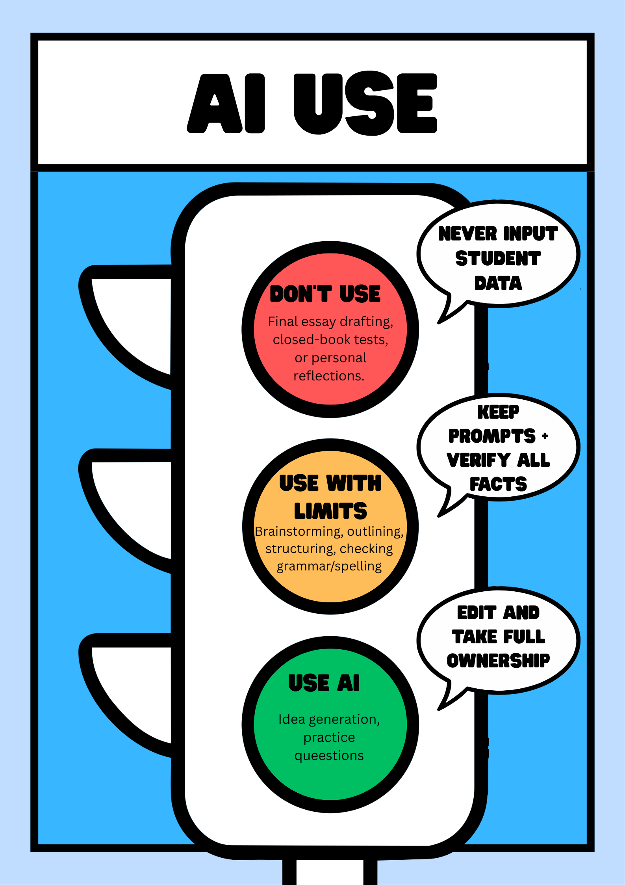
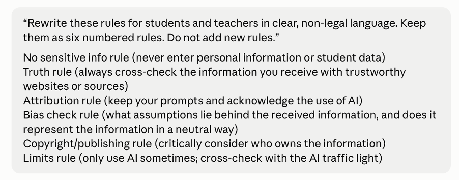
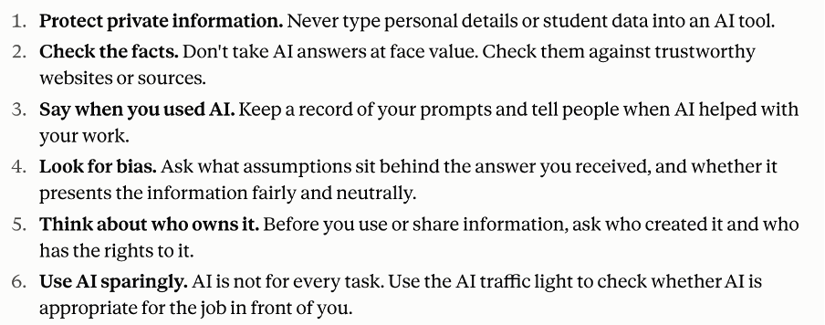
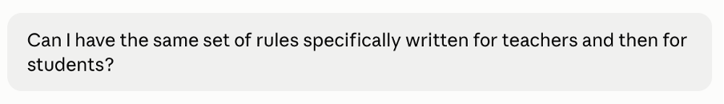
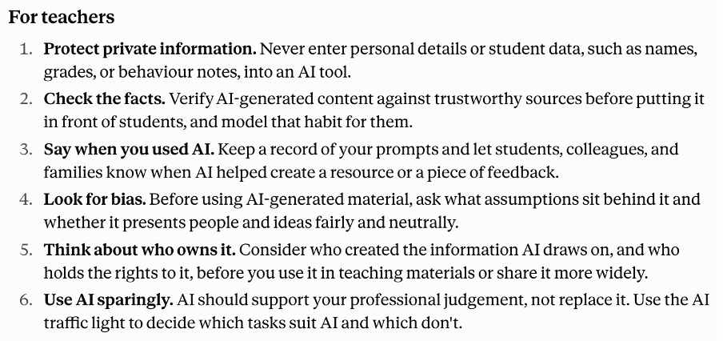
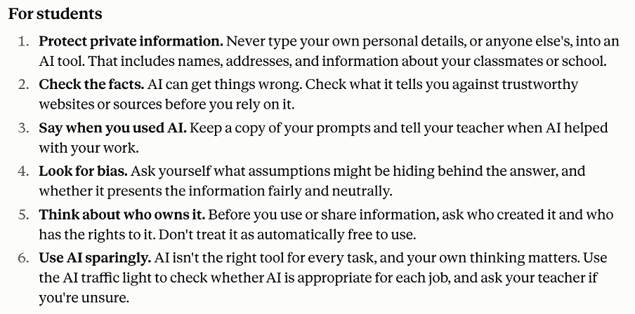
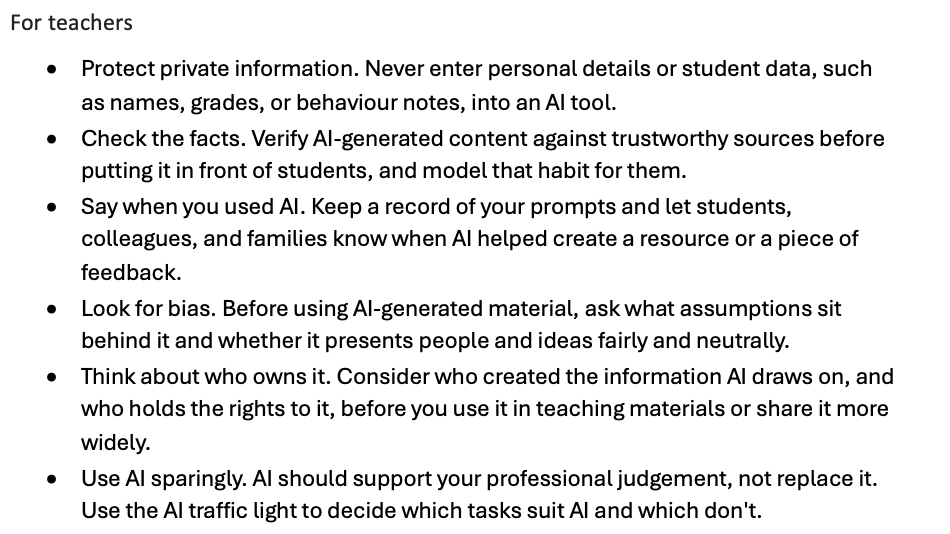
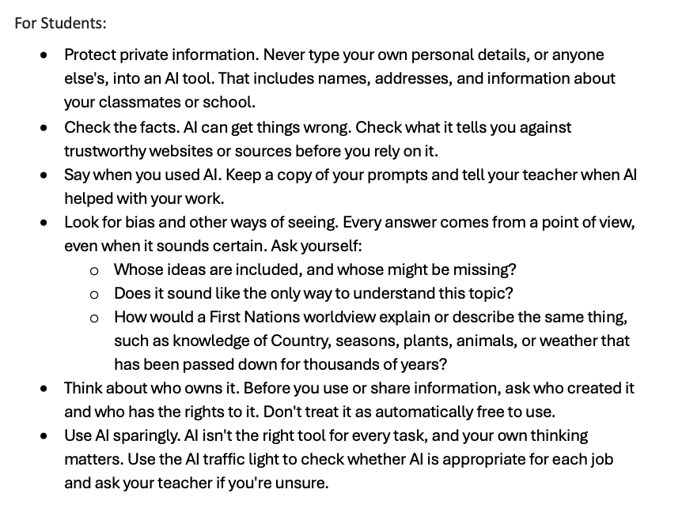

Download PosterIn secondary science across all year levels (7-12), caution is advised, and GenAI should only be used with limits. The main risk lies in issues with data ownership (Buchanan, 2019). Students and teachers easily share data about students' achievement and work samples in learning apps and GenAI platforms. Further, as discussed previously, there is the risk of accessing incorrect scientific information. Furze (2025) calls this “hallucination” (p. 1), where large language models make facts up or mix information incorrectly. I have witnessed this firsthand in my classroom, where it is extremely frustrating to rely on platforms for learning when the content is not correct.
To use GenAI safely, we need to put rules in place. Having data issues in mind, teachers and students should never put any personal information into GenAI. This ethical problem needs to be addressed with students directly to ensure their understanding and the potential consequences of breaching this rule. Secondly, at the individual level, students need to take ownership of their work and be explicitly taught how to cross-check their work (Buchanan, 2019). For this, an understanding of how large language models acquire their information is necessary. AI should be used with limits only, for example, for idea generation or spell-checking to avoid falling into the AI hallucination trap and applying incorrect information (Furze, 2025). The use of digital technologies in the science classroom is unavoidable, considering the safer environment for investigation simulations and research materials; however, students need direct instructions on how to use these and not fall for GenAI temptations and lose their ability to think critically at the same time (Gerlich, 2025; Kearney & Nielsen, 2019).





I used Claude to generate the above rules. It extended my initial rules with sensible add-ons such as to never insert grades and behaviour into AI in combination with students’ names. I further liked the addition for teachers that the correct behaviour needs to be modelled in front of the students, such as fact checking the information first. By prompting for two different sets of rules for teachers and students, Claude did not distort its answer but rather changed the register to a student friendly language which makes sense. I changed rule number 4, because I think that especially students in the younger years do not understand what bias and assumptions are. Especially in science the syllabus considers the worldview of First Nations in many dot points and their significant contribution to our western scientific views. I added this as a direct example to check for bias.

